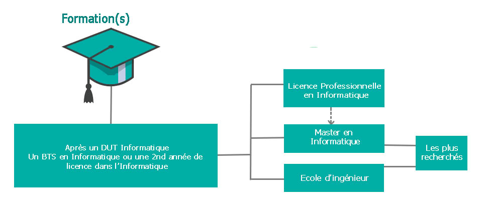

L'analyste-programmeur, aussi appelé "développeur", est la personne (ou le groupe de personne) qui met au point les applications/systèmes/logiciel pour une entreprise. Il gère aussi le maintien de ces derniers.
I - Développer
L'analyste programmeur est chargé de concevoir une partie ou l'intégralité d'un programme commandé par un client. Il est sous la direction d'un chef de projet et doit répondre à un cahier des charges pour chaque missions. Il doit aussi créer la documentation d'utilisation de son logiciel et doit, par la suite, la fournir au client avec ce dernier.
II - Maintenir / corriger
Lorsqu'il ne s'agit pas d'un nouveau projet, l'analyste-programmeur est chargé de la maintenance ainsi que de la mise à jour de vieux logiciels, c'est à dire qu'il corrige et améliore.
Après un Bac S ou STI2D, il existe différentes formations dans l'informatique pour accéder au métier de programmeur analyste (DUT, BTS, Licence, Prépa). Même si les premières offres d'emploi s'ouvrent au Bac +2, c'est plus souvent au Bac +3, après une licence professionnelle qu'elles sont le plus présentes. Les plus privilégiés sont les licences en développement et en web. Pour les ingénieurs, un Bac +5 est systématiquement demandé.
Les évolutions sont diverses pour ce métier, le plus courant est d'évoluer vers un poste de cadre en développement ou chef de projet informatique mais ce métier permet aussi de se diriger vers des postes de consultant logiciel, testeur et bien d'autres.
Le salaire d'un programmeur-analyste varie entre 25 000€ et 30 000€ pour un programmeur junior et atteint en moyenne de 40 000€ à 50 000€ pour un programmeur senior.